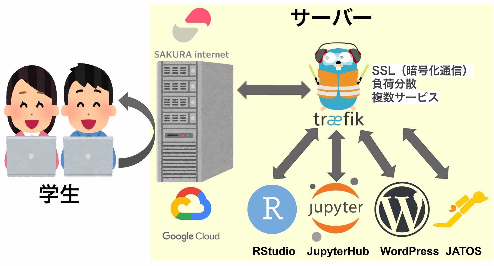
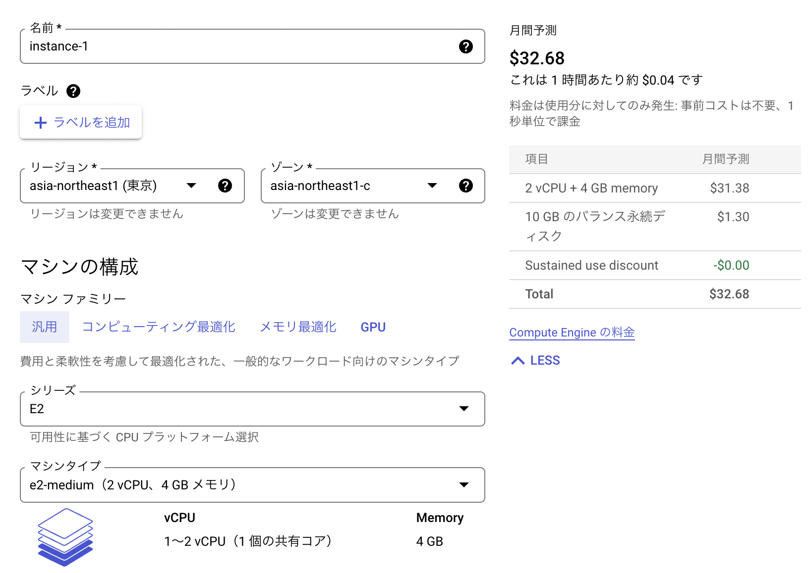
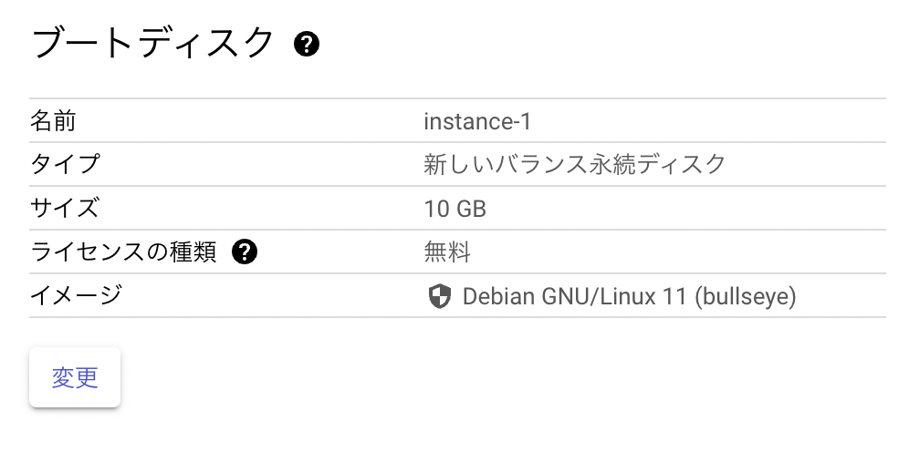
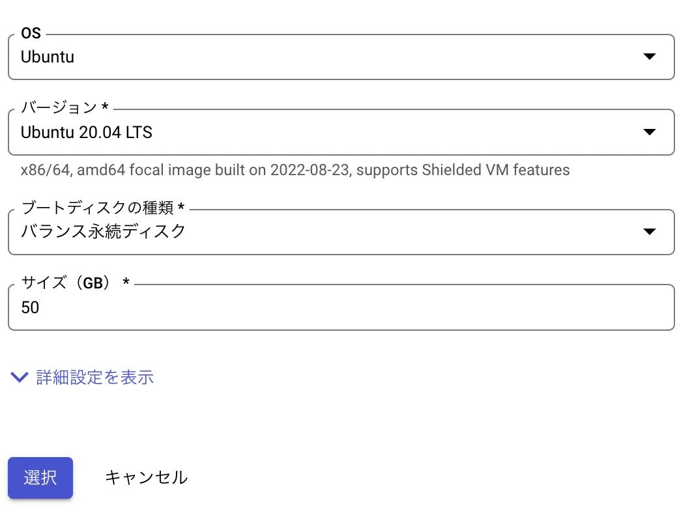
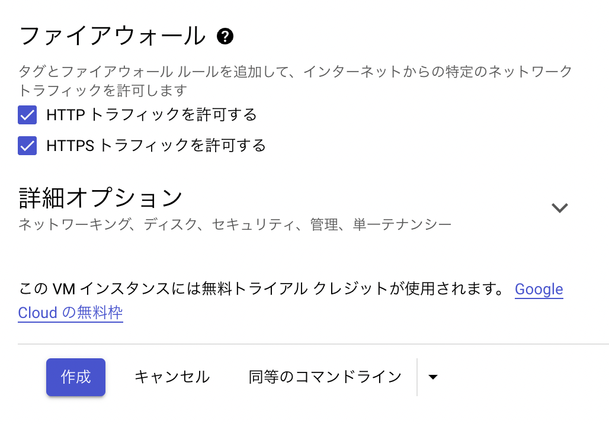
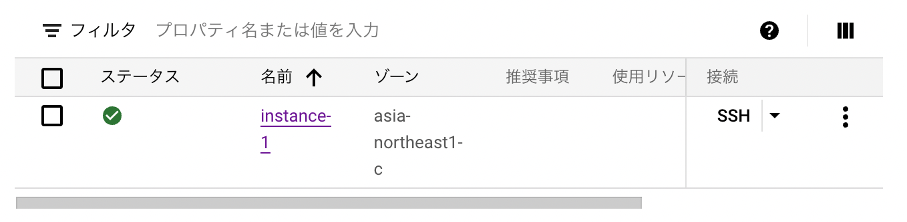
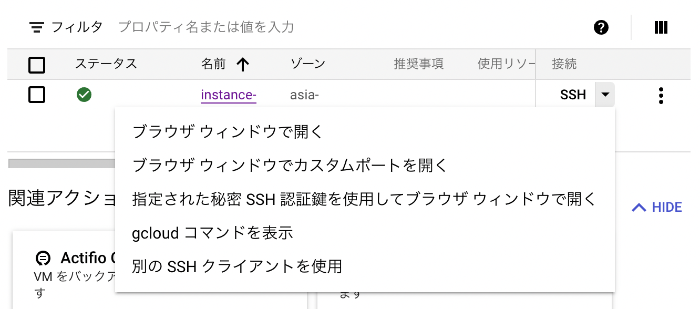
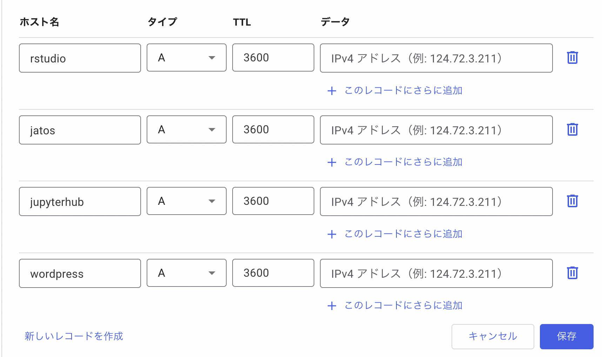
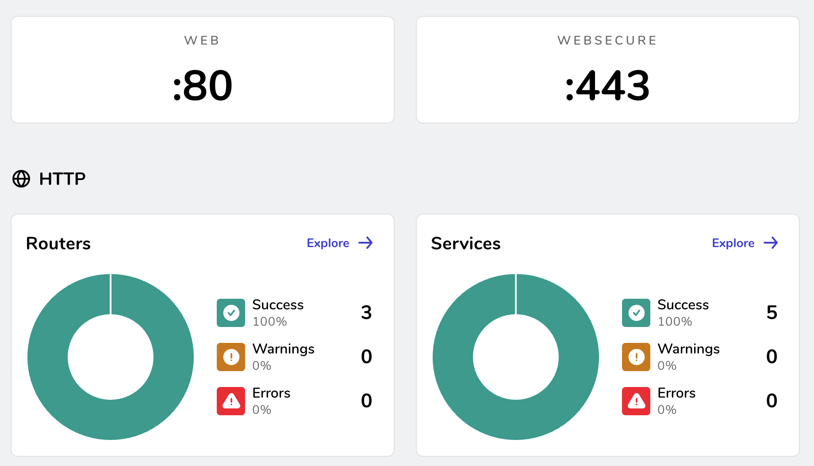

sudo vi /etc/ssh/sshd_config「Dockerベースの研究室クラウド基盤」の作成方法
JPA2022 TWS-004 「心理学研究における研究室インフラの整備」
Dockerベースの研究室クラウド基盤
サーバー設定
研究室クラウド基盤を整備するにあたって，以下のようにサーバーを設定する。
- さくらインターネットやGCPなどのサーバー上に，Dockerを使ってできるだけ楽にサービスを展開する（楽に設定したい）。
- traefikを通して，SSL，負荷分散などを行って，１つのサーバー上で複数のサービスを展開する（セキュリティは担保しつつサーバーは１つに抑えたい）。

注意事項
以降では各種サービスをサーバー上で展開して，研究室で活用していく方法について説明するが，以下の注意事項がある。
- 国里は臨床心理学者であり，情報系の専門家ではない。サーバーの利用については，各自がサーバーの基礎知識や基本的なセキュリティ管理をしっかり身につけていただくようにお願いします。
- 以降の内容について，誤った操作・設定による損害・損失について国里は責任を持てませんので，各自の判断で行ってください。
サーバーの選択
クラウドコンピューティングサービスは，GCP（Google Cloud Platform），AWS（Amazon Web Service），Microsoft Azure，さくらインターネット(専用サーバー)など様々ある。
VPSなどのサービスは安価だが，CPUの負荷がかかるRStudioやJupyterを使う場合はマシンパワーが足りないかもしれない（CPUに過負荷をかけてはいけないサービスもある）。国里は，2019年くらいからGCPを使っているが，2022年度からはゼミはさくらインターネットを使っている（円安の影響を受けない，固定金額）。
GCP(Google Cloud Platform）を用いたクラウド基盤の構築法
本日のデモの構成
GCPを使えるように設定し，GCE(Compute Engine)にて「インスタンスの作成」をクリックする。なお，Googleアカウントの2 段階認証を設定していない場合は，この機会に設定して，セキュリティを高める（パスワードも長いものにしておく）。
今回は，月額の利用料金を低く抑えられるGCPのe2-medium(2vCPU, 4GB)を使う。複数人で使う場合は，n2-standard-2(2vCPU, 8GBメモリ，約75ドル/月)，n2-standard-4(4vCPU, 8GBメモリ，約150ドル/月)が良いかもしれない(大体15名程度が在籍する国里研究室では，昨年度はn2-standard-4くらいを使っていた)。

ブートディスクを変更する
インスタンスを選んだら，「ブートディスク」で「変更」をクリックする。

OSやディスクの設定
OSはUbuntu 20.04 LTS，ディスクは50GBにした。

ファイヤーウォールを設定して，インスタンス起動
「HTTP トラフィックを許可する」と「HTTPS トラフィックを許可する」にチェックをいれて，「作成」をクリックする。インスタンスが作成されて起動される。

SSH接続してポートの変更をする
デフォルトの22番ポートには外部からの攻撃もあるのでポートを変更する。
ファイヤーウォールルールの追加
GCPの「VPCネットワーク」→「ファイヤーウォールルール」で「ファイアウォール ルールの作成」をクリックして，以下のように新しいSSHポートを設定する。
- 名前やターゲットタグ：任意(私は”ssh-allow-port”としています）
- 優先度：
1000 - トラフィックの方向:
上り - 一致した時のアクション:
許可 - ソースのIP範囲:
0.0.0.0/0 - プロトコル:
tcp - ポート: 好きなポート番号
GCP上でVMインスタンスをクリックし，「編集」ボタンを押して，ネットワークタグに上記で決めたターゲットタグを入れて保存する。
SSH接続してポートを変更する
インスタンスの「SSH」をクリックして，サーバーに接続(22番ポート仕様)する。

コンソールが出てきたら，以下のコマンドでsshdの設定ファイルを開く。
画面上で# Port 22 を探して， i をタイプして（文字が入可能に），#を削除して，22の代わりに使いたいポート番号を入力し，escキーをタイプしてから， :wq とタイプする（保存＆閉じる）。
sshdの設定を反映させるために，以下のコマンドでsshdを再起動させます。
sudo systemctl restart sshd22ポートを閉じる
22番portで開いた画面は閉じずにそのままにし（もしここで閉じちゃうと，ポート設定がうまくできてない場合にサーバーにアクセスできなくなる），VMインスタンスの「SSH」の下矢印を押して，「ブラウザウィンドウでカスタムポートを開く」をクリックする。そして，入力欄に先程設定した新しいSSHポート番号を入力する。

新しいSSHポートでも開けたら,「VPCネットワーク」→「ファイヤーウォールルール」で「ファイアウォール ルールの作成」を押して，以下を設定する。
- 名前やターゲットタグ: 任意（私は”disallow-ssh22”とした)
- 優先度:
1000 - トラフィックの方向:
上り - 一致した時のアクション:
拒否
- ソースのIP範囲:
0.0.0.0/0 - プロトコル:
tcp - ポート:
22
VMインスタンスの「編集」を押し，ネットワークタグに上記で決めたターゲットタグを入れて保存する(これで，httpのタグ，httpsのタグ，新しいsshポートのタグ，22番ポートを閉じるタグの４つになる)。
通常のSSH接続(22番ポート)をしても接続できず，「ブラウザウィンドウでカスタムポートを開く」で自分で設定したポートを使ってSSH接続できたら成功になる。
SSH接続後に以下を入力するとアクセス状況が見れる（ f で次の画面に進んで， q で閉じます）
sudo less /var/log/auth.logその他のセキュリティ設定としては，(1)請求アラートの設定（不正利用にも気付ける），(2)サーバー稼働状況の監視などがある。
Domainの入手とサブドメインの設定
Google Domainなどで研究室サーバー用のドメインを入手する（年1400円程度，無料でも入手できるサービスもあるが，国里は利用したことがない）。
Google Domainなどで，DNS設定をする（ドメイン名とIPアドレスを紐付ける）。ホスト名にサービス名をいれるとサブドメイン化できる（データにはインスタンスで表示される「外部IP」を入れる）。

Dockerのインストール
サーバー自体の設定ができたので，サービスを動かすためのDockerをDocker社のドキュメントに従ってインストールする。
まず，以下のように，Dockerのインストールに必要なソフトをインストールする。
sudo apt-get update
sudo apt-get install ca-certificates curl gnupg lsb-releaseGPGキーの追加とリポジトリの用意をする。
sudo mkdir -p /etc/apt/keyrings
curl -fsSL https://download.docker.com/linux/ubuntu/gpg | sudo gpg --dearmor -o /etc/apt/keyrings/docker.gpg
echo "deb [arch=$(dpkg --print-architecture) signed-by=/etc/apt/keyrings/docker.gpg] https://download.docker.com/linux/ubuntu $(lsb_release -cs) stable" | sudo tee /etc/apt/sources.list.d/docker.list > /dev/nullDocker Engineをインストールする。これでDockerの準備は完了になる。
sudo apt-get update
sudo apt-get install docker-ce docker-ce-cli containerd.io docker-compose-pluginTraefikの準備
各種サービスの暗号通信化(SSL)などをするTraefikをDockerを使って準備する。
Traefikはダッシュボードを出してくれるが，外部から丸見えなので，パスワードをつけるBASIC認証で使うと良い。その際に，htpasswdというソフトを使うので，それが入ったapache2-utilsをインストールする。
sudo apt install apache2-utilshtpasswdを，ユーザー名とパスワードを変更して実行する。アカウント名とハッシュ値が出てくるので保存しておく。
htpasswd -nb ユーザー名 パスワードdockerでネットワークの準備をする(ここでは，traefik-networkという名前にして，後でも使う)。
sudo docker network create traefik-networkTraefikの作業フォルダを作って，移動する。
mkdir traefik
cd traefik以下を実行して，traefik.ymlを用意する。
sudo vi traefik.yml以下をコピペして，メールアドレス@example.comはご自身のメールアドレスに変更する。変更できたら， esc を押して，:wqをタイプすることで保存して閉じる。
なお，以降でも，このymlが出てくるが，ymlはインデントが重要なので，インデントがズレていると正常に動作しない。ymlでのインデントは，半角スペース２つになる。
entryPoints:
web:
address: :80
http:
redirections:
entryPoint:
to: websecure
scheme: https
websecure:
address: :443
api:
insecure: false
dashboard: true
providers:
docker:
exposedByDefault: false
certificatesresolvers:
myresolver:
acme:
httpChallenge:
entryPoint: web
email: "メールアドレス@example.com"
storage: "/letsencrypt/acme_myresolver.json"
log:
filePath: "/logs/traefik.log"
format: json
level: INFO
accessLog:
filePath: "/logs/access.log"
format: json以下を実行して，compose.yml を用意する。
sudo vi compose.yml以下をコピペする。your.domainは，自分の使っているドメイン名に変更し， アカウント名とハッシュ値を貼り付けは，上のhtpasswdで出たIDのハッシュ値に変更する（その際に， $は全て$$にしないと動かない落とし穴があるので注意する。これでミスると動かない）。できたら，escを押して，:wqをタイプすることで保存して閉じる。
services:
traefik:
image: traefik:latest
container_name: traefik
restart: always
ports:
- "80:80"
- "443:443"
networks:
- traefik-network
environment:
TZ: Asia/Tokyo
labels:
traefik.enable: true
traefik.http.routers.dashboard.rule: Host(`traefik.your.domain`)
traefik.http.routers.dashboard.entrypoints: websecure
traefik.http.routers.dashboard.tls.certresolver: myresolver
traefik.http.routers.dashboard.service: api@internal
traefik.http.routers.dashboard.middlewares: auth
traefik.http.middlewares.auth.basicauth.users: アカウント名とハッシュ値を貼り付け
volumes:
- letsencrypt_data:/letsencrypt
- /var/run/docker.sock:/var/run/docker.sock:ro
- ./traefik.yml:/etc/traefik/traefik.yml:ro
- /var/log:/logs
volumes:
letsencrypt_data:
networks:
traefik-network:
external: truecompose.ymlを以下のように実行する。これで，compose.ymlで設定したようにdockerが設定され，コンテナが起動する。
sudo docker compose up -dhttps://traefik.ご自身のドメイン にアクセスすると，アカウント認証があるが，設定したものを入力して，以下のようなダッシュボードがでてきたら，成功している。

問題がなさそうなら，一度ホームディレクトリに戻る。
cd ..RStudio serverを用意する
ホームディレクトリ内にrstudio_composeディレクトリを作って，そちらに移動し，compose.ymlを作る。
sudo mkdir rstudio_compose
cd rstudio_compose
sudo vi compose.yml開いたdocker-compose.ymlに，以下のコードをコピペして，以下の変更を加える。
- rstudio.your.domainのyour.domainを自分のドメイン名に変更
- environmentのユーザーIDとパスワードを自分のものに変更
変更できたら，escキーをタイプして， :wq とタイプする（保存して閉じる）。
services:
rstudio:
image: ykunisato/paper-r:latest
container_name: rstudio
networks:
- traefik-network
container_name: rstudio
restart: always
environment:
- USER=ユーザー名
- PASSWORD=パスワード
volumes:
- ./rstudio:/home/rstudio
labels:
traefik.enable: true
traefik.http.routers.rstudio.rule: Host(`rstudio.your.domain`)
traefik.http.routers.rstudio.entrypoints: websecure
traefik.http.routers.rstudio.tls.certresolver: myresolver
networks:
traefik-network:
external: true以下を実行して，compose.ymlに従ってコンテナを起動する。イメージのダウンロードなどにしばらく時間がかかる。doneとでてきたら終了。
sudo docker compose up -dhttps://rstudio.ご自身のドメイン にアクセスして，RStudioのログイン画面が出てきて，ログインができたらうまくいっている。
一度，ホームディレクトリに戻る。
cd ..ここでうまくいかない場合，volumesの左側の./rstudioは，.のところをGCP上でpwdをした時にでてくるカレントディレクトにする必要があるかもしれない。また，RStduioの方の修正でうまくいかない場合は，上のTraefikの設定にミスがないかチェックください。
RStudioへのユーザー追加
compose.ymlで設定した以外のユーザーを追加する場合は，Dockerコンテナに接続してユーザーアカウントを作る。まず，以下のコマンドで，rstudioコンテナにssh接続する。
sudo docker exec -it rstudio bash次に，以下のコマンドで新規ユーザー登録する。パスワードを聞かれるので打ち込んで，あとはエンターキーやYをタイプする。
sudo adduser 新規ユーザー名このままだと，各ユーザーが自由にRパッケージをいれられないので，以下のコマンドで，ユーザーをstaffグループにする。
sudo usermod -a -G staff ユーザー名exitでコンテナから出る。
exitユーザーの一括追加
上記の方法は１名ずつ追加する方法だが，人数が多くなると大変になる。その場合は，newusersを使った一括登録が良い。まずは，以下のような感じの情報を表計算ソフトに入力する。ユーザーごとに変更が必要なのは，ユーザー名，ユーザーID（1001から連番にする），パスワード，ホームディレクトリ名（home/rstudioの下にユーザー名をいれる）である。残りの，グループID（50）, フルネーム（空白），ログインシェル（/bin/sh)は全員同じで問題ない。
| ユーザー名 | パスワード | ユーザーID | グループID | フルネーム | ホームディレクトリ | ログインシェル |
|---|---|---|---|---|---|---|
| ユーザー1 | ユーザー1のパスワード | 1001 | 50 | /home/rstudio/ユーザー1 | /bin/sh | |
| ユーザー2 | ユーザー2のパスワード | 1002 | 50 | /home/rstudio/ユーザー2 | /bin/sh | |
| ユーザー3 | ユーザー3のパスワード | 1003 | 50 | /home/rstudio/ユーザー3 | /bin/sh |
なお，上記の情報は，最終的に区切りに:を使って保存する。つまりuser1については，ユーザー1:ユーザー1のパスワード:1001:50::/home/rstudio/ユーザー1:/bin/shになる。上記の情報を表計算ソフトにいれて，それをcsvファイルで出力して，テキストエディタで開いて，カンマを:に変換して，一番上のヘッダー情報は削除して，最後に.txtの拡張子で保存するのが楽かと思う。ファイル名は，user.txtとしておく（なんでもいい）。
user.txtが作成できたら，VMにSSH接続して，user.txtをアップロードする（ウィンドウの右上の設定っぽいボタンをクリックするとアップロードの選択肢がでてくる）。アップロードしたuser.txtをrstudioのフォルダに一時的に移動する。
sudo mv user.txt rstudio_compose/rstudiorsutdioのコンテナに入る。
sudo docker exec -it rstudio bash以下を実行して，一括でユーザー登録する。
newusers /home/rstudio/user.txt一応,user.txtを削除してから，コンテナからでる。
rm /home/rstudio/user.txt
exitJupyterHubを用意する
ホームディレクトリ内にjupyterhub_composeディレクトリを作って，そちらに移動し，compose.ymlを作る。
mkdir jupyterhub_compose
cd jupyterhub_compose
sudo vi compose.yml以下をコピペして，jupyterhub.your.domainのyour.domainを自分のドメイン名に変更する。変更できたら，escキーをタイプして， :wq とタイプする（保存して閉じる）。
services:
jupyterhub:
image: ykunisato/ccp-lab-hub
container_name: jupyterhub
networks:
- traefik-network
restart: always
volumes:
- /home/ubuntu/jupyterhub:/home
labels:
traefik.enable: true
traefik.http.routers.jupyterhub.rule: Host(`jupyterhub.your.domain`)
traefik.http.routers.jupyterhub.entrypoints: websecure
traefik.http.routers.jupyterhub.tls.certresolver: myresolver
networks:
traefik-network:
external: true以下を実行して，compose.ymlに従ってコンテナを起動する
sudo docker compose up -d特にエラーが出てないなら，一度ホーム画面に戻る
cd ..Jupyter Hubのユーザー追加と設定
利用開始にあたり，コンテナ内に入ってユーザーを追加する(XXXはユーザー名，途中でパスワードが聞かれる。あとはYを打ったりエンターを押す)。
sudo docker exec -it jupyterhub bash
adduser XXX作成したアカウントをsuにして，juliaを起動する。
su XXX
julia以下をコピペして，juliaを設定する（パッケージを一気にインストールする）。
ENV["PYTHON"] = "";using Pkg;Pkg.update(); Pkg.add(["IJulia","PyCall"]); Pkg.build(["IJulia","PyCall"]); Pkg.add(["DataFrames","PyPlot","Distributions","Statistics","JuliaFormatter","CPUTime","Gadfly","GLM","Optim","Plots","Query","RDatasets","SpecialFunctions","StatisticalRethinking","StatsBase","StatsFuns","StatsPlots","AdvancedHMC","BAT","Bijectors","CmdStan","DiffEqBayes","DistributionsAD","ForwardDiff","MCMCChains","MeasureTheory","ParameterizedFunctions","Turing","LinearAlgebra","DifferentialEquations","Roots","SymPy","ForneyLab"]);Pkg.precompile()exitでコンテナから出る。
exithttps://jupyterhub.ご自身のドメイン にアクセスして，Jupyterhubのログイン画面が出てきて，ログインができたらうまくいっている。
JATOSを用意する
ホームディレクトリ内にjatos_composeディレクトリを作って，そちらに移動し，compose.ymlを作る。
sudo mkdir jatos_compose
cd jatos_compose
sudo vi compose.yml以下をコピペして，jatos.your.domainのyour.domainを自分のドメイン名に変更する。変更できたら，escキーをタイプして， :wq とタイプする（保存して閉じる）。
services:
jatos:
image: jatos/jatos:latest
container_name: jatos
networks:
- traefik-network
restart: always
labels:
traefik.enable: true
traefik.http.routers.jatos.rule: Host(`jatos.your.domain`)
traefik.http.routers.jatos.entrypoints: websecure
traefik.http.routers.jatos.tls.certresolver: myresolver
networks:
traefik-network:
external: true以下を実行して，compose.ymlに従ってコンテナを起動する。
sudo docker compose up -dエラーが無ければ，一度ホーム画面に戻る
cd ..JATOSは立ち上がったらすぐに，https://jatos.ご自身のドメイン にアクセスして，admin/adminでログインして，アドミンのパスワードを変更する(最初は誰でもadmin/adminで入れるので，立ち上がったらすぐに設定する)。あとの設定はJATOS上でできる。
WordPressを用意する
ホームディレクトリ内にwordpress_composeディレクトリを作って，そちらに移動し，compose.ymlを作る。
sudo mkdir wordpress_compose
cd wordpress_compose
sudo vi compose.yml以下をコピペして，以下を変更する。
- wordpress.your.domainのyour.domainを自分のドメイン名に変更
- ルートのパスワードをご自身のものに変更
- DBのパスワードをご自身のものに変更(２箇所)
変更できたら，escキーをタイプして， :wq とタイプする（保存して閉じる）。
services:
db:
image: mysql:5.7
container_name: wp-db
volumes:
- db_data:/var/lib/mysql
networks:
- default
restart: always
environment:
MYSQL_ROOT_PASSWORD: ルートのパスワード
MYSQL_DATABASE: wordpress
MYSQL_USER: wordpress
MYSQL_PASSWORD: DBのパスワード
wordpress:
depends_on:
- db
image: wordpress:latest
container_name: wordpress
networks:
- traefik-network
- default
restart: always
environment:
WORDPRESS_DB_HOST: db:3306
WORDPRESS_DB_USER: wordpress
WORDPRESS_DB_PASSWORD: DBのパスワード
labels:
traefik.enable: true
traefik.http.routers.wordpress.rule: Host(`wordpress.your.domain`)
traefik.http.routers.wordpress.entrypoints: websecure
traefik.http.routers.wordpress.tls.certresolver: myresolver
volumes:
db_data:
networks:
traefik-network:
external: true以下を実行して，compose.ymlに従ってコンテナを起動する
sudo docker compose up -dエラーが無ければ，ホーム画面に戻る
cd ..https://wordpress.ご自身のドメイン にアクセスして， WordPressが立ち上がったのを確認したら，WordPressのインストールとアドミンアカウントの設定を行う。プラグインのSensei-LMSをインストールして，有効化する。
サービスの稼働状況の確認
これで，自分のサーバーで４サービス(RStudio server, JupyterHub, JATOS, WordPress)が展開できた。以下で稼働状況が確認できる。
sudo docker ps -a各サービスの使用状況（CPUやメモリ）は，以下で確認できる。使用状況が流れるので，不要になったら，Ctrl + cで停止する。使ってないのに異常にCPUが稼働している場合は，なんらかのトラブルを想定する。
sudo docker stats -aEnjoy!